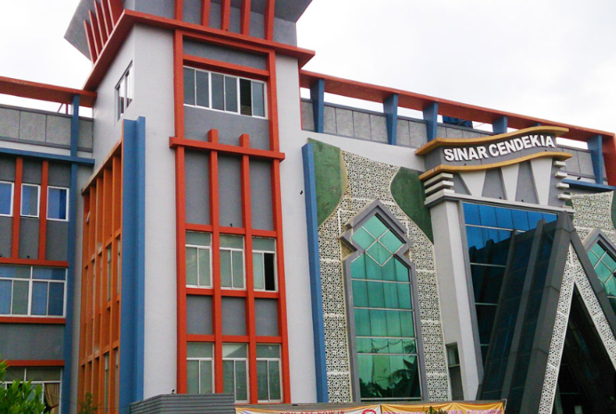
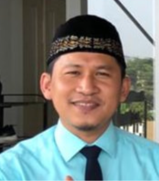
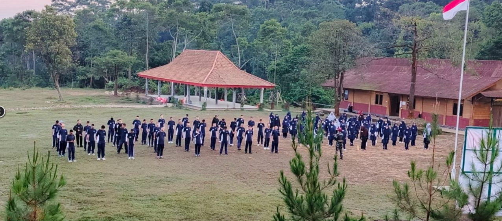
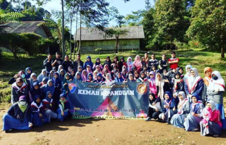

Visi
Menjadi sekolah Islam yang membentuk generasi beriman, berilmu, berakhlak mulia, mandiri, dan berprestasi.


Sambutan Kepala Sekolah
Assalamu’alaikum warahmatullahi wabarakatuh.
Selamat datang di website SMA Islam Sinar Cendekia. Website ini menjadi salah satu sarana informasi dan komunikasi sekolah. Kami berharap kehadirannya dapat membantu siswa, orang tua, alumni, dan masyarakat mengenal lingkungan serta kegiatan sekolah.
Mari bersama-sama menciptakan lingkungan belajar yang positif, mengembangkan potensi diri, serta membentuk generasi yang berilmu dan berakhlak mulia.
Wassalamu’alaikum warahmatullahi wabarakatuh.
Budi Haryanto
Kepala Sekolah
Arah dan Tujuan
Menjadi sekolah Islam yang membentuk generasi beriman, berilmu, berakhlak mulia, mandiri, dan berprestasi.
Catatan: rumusan visi dan misi di atas merupakan contoh sementara untuk tugas. Ganti dengan rumusan resmi sekolah jika sudah tersedia.
Kehidupan Sekolah

